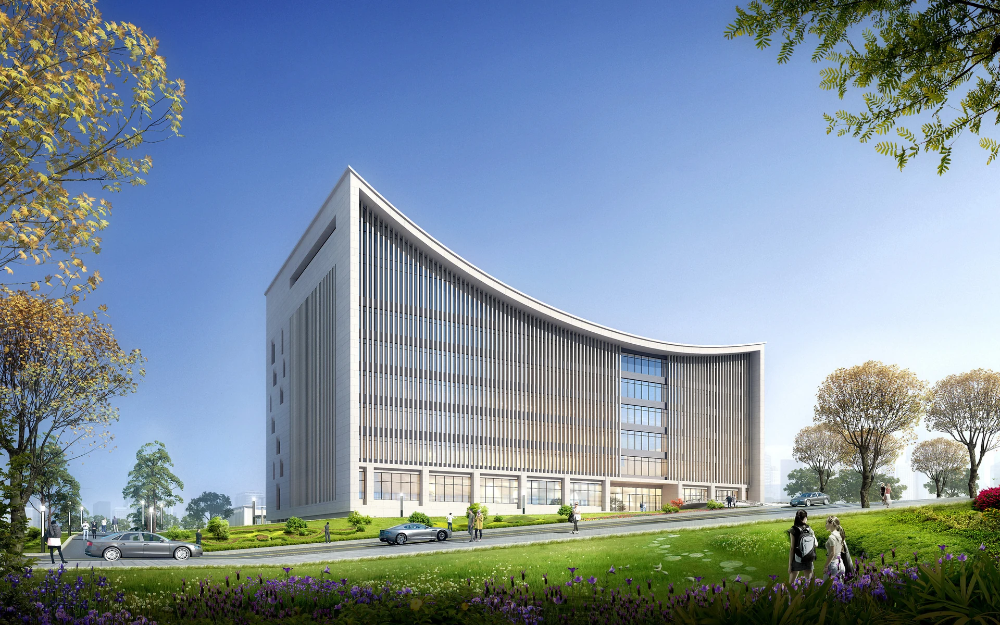
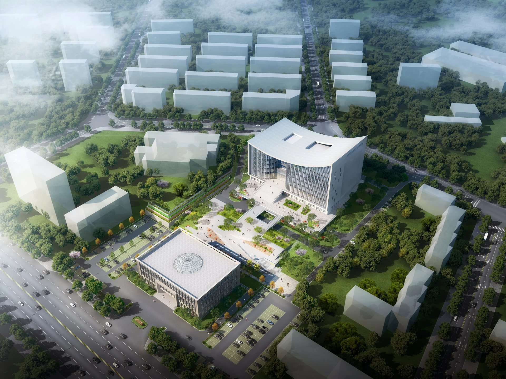

项目与空间
项目建筑面积 35,153.19㎡。空间表达重点为主入口、中庭、公共大厅、楼层平台与扶梯关系。
鸡西市政务服务中心。以连续的楼层展开、建筑剖切与公共动线，呈现完整建筑与内部空间的关系。
依据已有平面、剖面与建筑网格组织空间。
把结构、层级、连接与运动转为可读的空间表达。
在同一建筑坐标中展开楼层、剖面与构件关系。
通过播放、时间轴和标注控制观察节奏。
项目建筑面积 35,153.19㎡。空间表达重点为主入口、中庭、公共大厅、楼层平台与扶梯关系。
参与政务服务中心项目设计。本页将项目图纸与模型组织为楼层展开、入口剖切和公共动线演示，说明整体建筑与内部空间的关系。

